Atlántico#
El Atlántico es uno de los 32 departamentos que conforman la república de Colombia. Se encuentra conformado por 22 Municipios y el Distrito Especial Industrial y Portuario de Barranquilla, su capital.
Está situado al norte del territorio nacional, límita por el norte y noreste con el mar Caribe, en una extensión aproximada de 90 Km; desde el rompeolas occidental en Bocas de Ceniza, hasta las salinas de Galerazamba. Al este, con el río Magdalena, en una longitud de 105 Km, contados desde su desembocadura en Bocas de Ceniza hasta el desprendimiento del Canal del Dique en Calamar; al sur, suroeste y oeste con el departamento de Bolívar desde Calamar hasta las Salinas de Galerazamba.
Presenta un clima tropical de tipo estepa y sabana de carácter árido en la desembocadura del río Magdalena y alrededores de Barranquilla; semi-árido en las fajas aledañas al litoral y al río Magdalena y semihúmedo desde Sabanalarga hacia el sur.

Para el análisis se cuenta con 18,576 registros correspondientes a casos ocurridos en alguno de los 22 municipios del departamento del atlántico, representado en 21 variables, en el periodo del año 2017 al año 2023.
# [] Valores nulos por variable
faltantes = df.isnull().sum()
print("Valores faltantes por variable: \n")
print(faltantes[faltantes > 0])
Valores faltantes por variable:
fecha_hospitalizacion 7706
fecha_nacimiento 525
localidad 3218
barrio 244
direccion 1
dtype: int64
1. Descriptivo de variables#
Variables demográficas#
La población infectada por dengue en el Atlántico está en su mayoría, en edad adolescente (42.2%), seguida de población adulta (22.1%) e infantes (21.8%); estos grupos etarios son los de mayor exposición al estar en el medio educativo y laboral. Se resalta que para la población adulto mayor y ancianidad, se presentan una proporción más elevada de dengue grave, lo que manifiesta una mayor vulnerabilidad clínica en estas etapas.
La distribución de casos por sexo es equilibrada, siento el 52.4% masculinos. En términos étnicos, solo un 2.17% de casos se asocia a pacientes pertenecientes a un grupo étnico. Los pacientes, en su mayoría están afiliados al régimen de salud subsidiado (53.5%) y contributivo (39.1%), no obstante, aunque la población de pacientes no asegurados representan apenas el 2.3% de los casos, concentran una mayor proporción de dengue grave (6.3%), lo que sugiere una posible asociación entre la ausencia de cobertura en salud y un peor desenlace clínico del dengue.
# [Análisis] Edad de los pacientes
df_edad = df[df["ciclo_vital"] != "Menor de 1 año"].copy()
orden_ciclos_edad = [
"Primera infancia",
"Infancia",
"Adolescencia",
"Adulto",
"Adulto mayor",
"Ancianidad"
]
df_edad["ciclo_vital"] = pd.Categorical(
df_edad["ciclo_vital"],
categories=orden_ciclos_edad,
ordered=True
)
def tabla_descriptiva(df, variable, grupo=None):
"""
Genera una tabla descriptiva (media, mediana, DE, IQR, etc.)
por grupos (ej. ciclo vital).
"""
if grupo:
desc = df.groupby(grupo, observed=True)[variable].agg(
n = 'count',
media = 'mean',
mediana = 'median',
sd = 'std',
q25 = lambda x: np.percentile(x, 25),
q75 = lambda x: np.percentile(x, 75),
minimo = 'min',
maximo = 'max'
).reset_index()
else:
desc = df[variable].agg(
n = 'count',
media = 'mean',
mediana = 'median',
sd = 'std',
q25 = lambda x: np.percentile(x, 25),
q75 = lambda x: np.percentile(x, 75),
minimo = 'min',
maximo = 'max'
).to_frame().T
return desc.round(2)
tabla = tabla_descriptiva(df_edad, variable="edad_años", grupo="ciclo_vital")
tabla
| ciclo_vital | n | media | mediana | sd | q25 | q75 | minimo | maximo | |
|---|---|---|---|---|---|---|---|---|---|
| 0 | Primera infancia | 1925 | 2.56 | 3.0 | 1.17 | 1.0 | 4.0 | 1 | 4 |
| 1 | Infancia | 4066 | 7.20 | 7.0 | 1.38 | 6.0 | 8.0 | 5 | 9 |
| 2 | Adolescencia | 7849 | 13.91 | 14.0 | 2.69 | 12.0 | 16.0 | 10 | 19 |
| 3 | Adulto | 4096 | 30.70 | 27.0 | 10.30 | 22.0 | 36.0 | 20 | 59 |
| 4 | Adulto mayor | 482 | 69.12 | 68.0 | 6.91 | 63.0 | 74.0 | 60 | 84 |
| 5 | Ancianidad | 45 | 89.38 | 88.0 | 3.89 | 86.0 | 91.0 | 85 | 101 |
La edad de los pacientes, diferenciada entre grupos etarios, se distribuye de la siguiente manera:
Primera infancia [1-4 años]: Mayor concentración de edades al rededor de los 3 años.
Infancia [5-9 años]: Edad concentrada entre los 6-8 años.
Adolescencia [10-19 años]: Mayor cantidad de pacientes entre los 12-16 años.
Adulto [20-59 años]: Mayoría de pacientes entre los 22-36 años.
Adulto mayor [60 - 84 años]: Edades entre los 63-74 años.
Ancianidad [85 -101 años]: Concentración de edades entre los 86-91 años.
# [Gráfico] Distribución de edad
def graficos(df, variable, grupo):
"""
Genera:
1. Histograma + densidad global
2. Densidad por ciclo vital
3. Boxplot por ciclo vital
"""
palette = ["#08306B", "#08519C", "#2171B5", "#4292C6", "#6BAED6", "#9ECAE1"]
# --- 2. Densidad por ciclo vital ---
plt.figure(figsize=(10,5))
sns.kdeplot(data=df, x=variable, hue=grupo, common_norm=False, fill=True, palette=palette)
plt.title("Distribución de edades por ciclo vital")
plt.xlabel("Edad")
plt.ylabel("Densidad")
plt.tight_layout()
plt.show()
# --- 3. Boxplot por ciclo vital ---
plt.figure(figsize=(10,8))
sns.boxplot(data=df, x=grupo, hue=grupo, y=variable, palette="Blues")
plt.title("Boxplot de edades por ciclo vital")
plt.xlabel("Ciclo vital")
plt.ylabel("Edad")
plt.tight_layout()
plt.show()
graficos(df_edad, variable="edad_años", grupo="ciclo_vital")
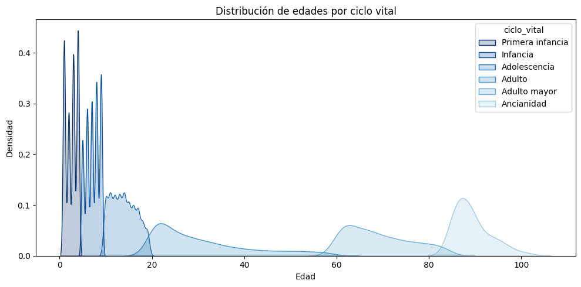
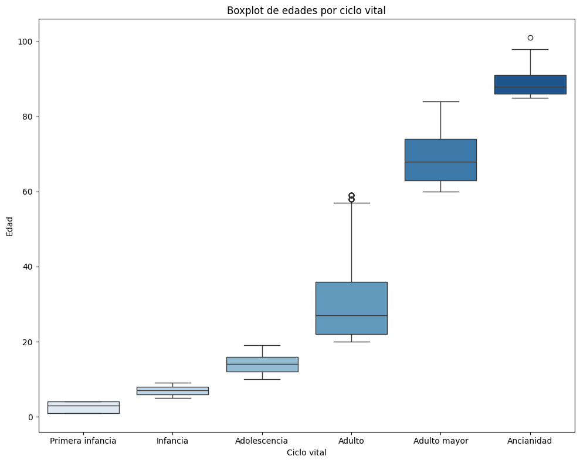
Los gráficos representan la distribución de la edad, discriminada por grupos etarios, donde se evidencia que para las primeras etapas de la vida, la distribución de la edad de los pacientes es homogénea. La etapa adulta es la de mayor variabilidad, con sesgo positivo, lo que indica una mayor proporción de casos hacia los adultos mas jóvenes. Misma dinámica se aprecia para el grupo Adulto mayor y Ancianidad.
Variables de evento#
print("DESCRIPCIÓN DE VARIABLES DE EVENTO")
describir_categorica(df['evento'])
describir_categorica(df['tipo_de_caso'])
describir_categorica(df['hospitalizacion'])
describir_categorica(df['desenlace'])
DESCRIPCIÓN DE VARIABLES DE EVENTO
📌 Variable: evento
Conteo Proporción Clasico Grave Prop_Clasico Prop_Grave
evento
Clasico 18158 0.9775 18158 0 1.0 0.0
Grave 418 0.0225 0 418 0.0 1.0
-----------------------------------
📌 Variable: tipo_de_caso
Conteo Proporción Clasico Grave Prop_Clasico \
tipo_de_caso
Probable 13611 0.7327 13311 300 0.978
Conf. por laboratorio 4912 0.2644 4794 118 0.976
Conf. por nexo 53 0.0029 53 0 1.000
Prop_Grave
tipo_de_caso
Probable 0.022
Conf. por laboratorio 0.024
Conf. por nexo 0.000
-----------------------------------
📌 Variable: hospitalizacion
Conteo Proporción Clasico Grave Prop_Clasico Prop_Grave
hospitalizacion
Si 10867 0.585 10459 408 0.9625 0.0375
No 7709 0.415 7699 10 0.9987 0.0013
-----------------------------------
📌 Variable: desenlace
Conteo Proporción Clasico Grave Prop_Clasico Prop_Grave
desenlace
Vivo 18569 0.9996 18158 411 0.9779 0.0221
Fallecido 7 0.0004 0 7 0.0000 1.0000
-----------------------------------
El dengue clásico en el Atlántico tiene una representatividad del 97.8% de casos (181,158) frente al 2.3% de casos graves (418) en todo el territorio. En su mayoría los registros analizados corresponden a casos probables (73.3%), solo el 26.4% fueron casos confirmados por prueba en laboratorio. Todos los casos confirmados por nexo epidemiológico (53) se relacionan al dengue clásico.
De los casos registrados, se tiene que solo el 58.5% de los pacientes requirieron hospitalización, mientras que el 41.5% fueron manejados de manera ambulatoria. De los 418 casos de dengue grave, 10 no fueron hospitalizados.
En relación a los fallecidos, la mortalidad registrada es mínima, existiendo solo 7 pacientes fallecidos, todos por dengue grave.
Variables espaciales#
Casos netos#
print("DESCRIPCIÓN DE VARIABLES ESPACIALES")
describir_categorica(df["area"])
describir_categorica(df['municipio'])
DESCRIPCIÓN DE VARIABLES ESPACIALES
📌 Variable: area
Conteo Proporción Clasico Grave Prop_Clasico \
area
Cabecera municipal 17839 0.9603 17437 402 0.9775
Centro Poblado 644 0.0347 630 14 0.9783
Rural disperso 93 0.0050 91 2 0.9785
Prop_Grave
area
Cabecera municipal 0.0225
Centro Poblado 0.0217
Rural disperso 0.0215
-----------------------------------
📌 Variable: municipio
Conteo Proporción Clasico Grave Prop_Clasico Prop_Grave
municipio
SOLEDAD 8790 0.4732 8623 167 0.9810 0.0190
MALAMBO 2087 0.1123 2045 42 0.9799 0.0201
BARANOA 1206 0.0649 1186 20 0.9834 0.0166
SABANALARGA 1177 0.0634 1145 32 0.9728 0.0272
GALAPA 1143 0.0615 1109 34 0.9703 0.0297
PUERTO COLOMBIA 941 0.0507 884 57 0.9394 0.0606
POLONUEVO 447 0.0241 443 4 0.9911 0.0089
USIACURÍ 400 0.0215 398 2 0.9950 0.0050
JUAN DE ACOSTA 331 0.0178 325 6 0.9819 0.0181
LURUACO 287 0.0155 281 6 0.9791 0.0209
MANATÍ 264 0.0142 256 8 0.9697 0.0303
PONEDERA 260 0.0140 254 6 0.9769 0.0231
PALMAR DE VARELA 187 0.0101 183 4 0.9786 0.0214
CAMPO DE LA CRUZ 152 0.0082 145 7 0.9539 0.0461
SUAN 151 0.0081 147 4 0.9735 0.0265
SANTO TOMÁS 148 0.0080 147 1 0.9932 0.0068
SABANAGRANDE 135 0.0073 133 2 0.9852 0.0148
REPELÓN 114 0.0061 109 5 0.9561 0.0439
TUBARÁ 103 0.0055 98 5 0.9515 0.0485
CANDELARIA 91 0.0049 88 3 0.9670 0.0330
PIOJÓ 80 0.0043 78 2 0.9750 0.0250
SANTA LUCÍA 55 0.0030 55 0 1.0000 0.0000
DESCONOCIDO 27 0.0015 26 1 0.9630 0.0370
-----------------------------------
Los casos de dengue se registraron en su mayoría en una cabecera municipal (96%), siendo solo el 4% en un centro poblado o rural disperso.
La dinámica por municipios es variada, en datos netos, los municipios metropolitanos de Soledad y Malambo registran la mayor cantidad de casos de dengue clásico y grave. La mitad de los casos se concentra en el municipio de Soledad (47.3%) con 8,623 casos, de los cuales 167 son de dengue grave.
Luego, los municipios de Baranoa, Sabanalarga y Galapa, constituyen un bloque de más de 1,000 casos reportados, representando cada uno un 6% del total de casos, conformando el núcleo de mayor transmisión. Cabe resaltar que en el municipio de Puerto Colombia, se registro la mayor cantidad de casos graves (57) después de Soledad.
Con menor representatividad, sin superar los 100 registros, se encuentran los municipios de Candelaria, Piojó y Santa Lucía, este último, no presenta casos por dengue grave.
En resumen, la epidemia de dengue en el departamento del Atlántico presenta un patrón predominante urbano, con concentración en los municipios del área metropolitana y céntrica, lo cual podría reflejar tanto características locales de transmisión como posibles diferencias en el acceso a diagnóstico oportuno.
# [Tabla] Casos por municipio
tabla_mun = df.groupby(["municipio", "año", "evento"]).size().reset_index(name="casos")
# [Gráfico] Tabla casos por municipio
totales_mun = tabla_mun.groupby("municipio")["casos"].sum()
municipios_filtrados = totales_mun[totales_mun > 800].index
tabla_filtrada = tabla_mun[tabla_mun["municipio"].isin(municipios_filtrados)]
eventos = ["Clasico", "Grave"]
for evento in eventos:
tabla_evento = tabla_filtrada[tabla_filtrada["evento"] == evento]
# Crear tabla pivote
pivot = tabla_evento.pivot_table(
index="municipio",
columns="año",
values="casos",
fill_value=0
).astype(int)
# Graficar
plt.figure(figsize=(12,8))
sns.heatmap(pivot, cmap="Blues", linewidths=0.5, annot=True, fmt="d")
plt.title(f"Casos de Dengue {evento}")
plt.xlabel("Año")
plt.ylabel("Municipio")
plt.show()
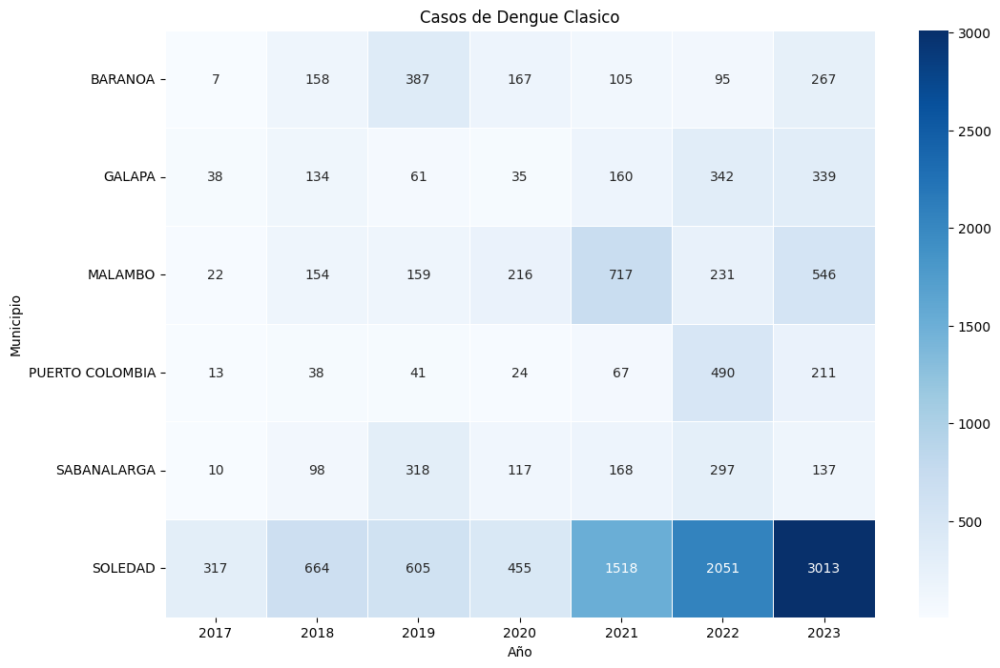
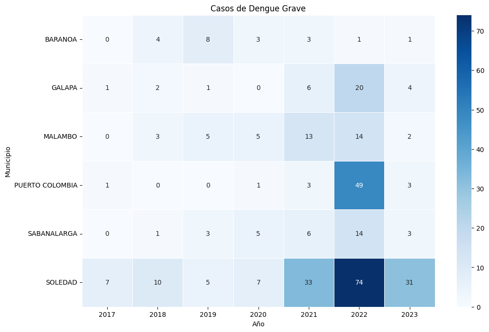
Casos por densidad poblacional#
# [Tabla] Casos por municipio
tabla_mun = df.groupby(["municipio", "año", "evento"]).size().reset_index(name="casos")
# Ajustar nombres de columna para unir
poblacion = poblacion.rename(columns={'MUNICIPIO':'municipio', 'TOTAL':'total_pob'})
# Convertir columnas de año en una columna 'año'
poblacion_long = poblacion.melt(
id_vars=['municipio', 'total_pob'], # mantener municipio y total
value_vars=['2017.0','2018.0','2019.0','2020.0','2021.0','2022.0','2023.0'],
var_name='año',
value_name='poblacion'
)
# Asegurarse de que 'año' sea numérico
poblacion_long['año'] = poblacion_long['año'].astype(float).astype(int)
# Unir casos con población del mismo año
tabla_mun = tabla_mun.merge(poblacion_long, on=['municipio','año'], how='left')
# Densidad por año y municipio
tabla_mun['densidad'] = tabla_mun['casos'] / tabla_mun['poblacion']
# Si quieres por cada 1000 habitantes
tabla_mun['densidad'] = (tabla_mun['casos'] / tabla_mun['poblacion']) * 1000
tabla_mun = tabla_mun.sort_values(by='densidad', ascending=False)
# Densidad global por municipio (todos los años)
densidad_global = tabla_mun.groupby("municipio").agg(
casos_totales=('casos', 'sum'),
poblacion_total=('total_pob', 'first') # la misma población total por municipio
).reset_index()
densidad_global['densidad_global'] = (densidad_global['casos_totales'] / densidad_global['poblacion_total']) * 10000
# Ordenar de mayor a menor
densidad_global = densidad_global.sort_values(by='densidad_global', ascending=False)
densidad_global.head(10)
| municipio | casos_totales | poblacion_total | densidad_global | |
|---|---|---|---|---|
| 11 | POLONUEVO | 447 | 155707.0 | 28.707765 |
| 0 | BARANOA | 1206 | 539600.0 | 22.349889 |
| 4 | GALAPA | 1143 | 519297.0 | 22.010526 |
| 13 | PUERTO COLOMBIA | 941 | 443890.0 | 21.198946 |
| 7 | MALAMBO | 2087 | 1105302.0 | 18.881717 |
| 5 | JUAN DE ACOSTA | 331 | 178618.0 | 18.531167 |
| 19 | SOLEDAD | 8790 | 5229151.0 | 16.809612 |
| 16 | SABANALARGA | 1177 | 785276.0 | 14.988361 |
| 20 | SUAN | 151 | 103469.0 | 14.593743 |
| 12 | PONEDERA | 260 | 202652.0 | 12.829876 |
top10 = densidad_global.head(10)
plt.figure(figsize=(10, 6))
sns.barplot(data=top10, x='densidad_global', y='municipio', hue='municipio', palette='Purples_r')
plt.title("Densidad global por departamento (casos por 10,000 hab)", fontsize=14)
plt.xlabel("Densidad (por 10,000 habitantes)")
plt.ylabel("Municipio")
plt.tight_layout()
plt.show()
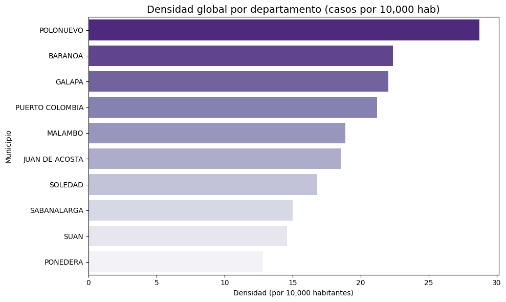
densidad_global['densidad_global'].describe()
count 15.000000
mean 15.285692
std 6.864260
min 4.798004
25% 9.805293
50% 14.988361
75% 20.040332
max 28.707765
Name: densidad_global, dtype: float64
sns.boxplot(data=densidad_global, x='densidad_global', color='Purple')
<Axes: xlabel='densidad_global'>
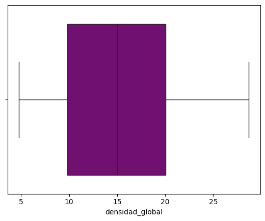
La densidad poblacional de casos de dengue por municipio presenta una gran variabilidad. El valor promedio es de aproximadamente 14.3 casos por cada 10,000 habitantes, con una desviación estándar de 8.4 casos. Un 25% de los municipios reporta entre 7 a 14.3 casos, mostrando entonces la mitad de los territorios no reportan más de 15 casos por cada 10,000 habitantes. El municipio de Usiacurí es el de mayor densidad de casos (37), este es un dato atípico al conjunto, representando una tasa muy alta. La distribución de la densidad es sesgada hacia la derecha, con municipios de Polovuevo, Baranoa, Galapa y Puerto Colombia reportando más de 20 casos por cada 10,000 habitantes.
# [Gráfico] Mapa casos por municipio según evento
eventos = ["Clasico", "Grave"]
for evento in eventos:
anios = sorted(df["año"].unique())
n = len(anios) + 1 # años + total
# Calcular número de filas y columnas dinámicamente
columnas = 4
filas = (n + columnas - 1) // columnas
fig, axes = plt.subplots(filas, columnas, figsize=(5*columnas, 6*filas))
axes = axes.flatten()
# Mapas por año
for i, anio in enumerate(anios):
casos_anio = (
tabla_mun[(tabla_mun["año"] == anio) & (tabla_mun["evento"] == evento)]
.groupby("municipio")["densidad"].sum() # sumar densidad por municipio
.reset_index()
)
gdf_plot = gdf.merge(casos_anio, on="municipio", how="left").fillna(0)
gdf_plot.plot(column="densidad", cmap="Purples", linewidth=0.8, edgecolor="0.8",
legend=True, ax=axes[i])
axes[i].set_title(f"Dengue {evento} {anio}")
axes[i].axis("off")
gdf_total = gdf.merge(densidad_global[['municipio','densidad_global']], on="municipio", how="left").fillna(0)
gdf_total.plot(column="densidad_global", cmap="Purples", linewidth=0.8, edgecolor="0.8",
legend=True, ax=axes[-1])
axes[-1].set_title(f"Dengue {evento} Densidad Global")
axes[-1].axis("off")
# Ocultar subplots vacíos (si sobran)
for j in range(len(anios) + 1, len(axes)):
axes[j].axis("off")
plt.tight_layout()
plt.show()
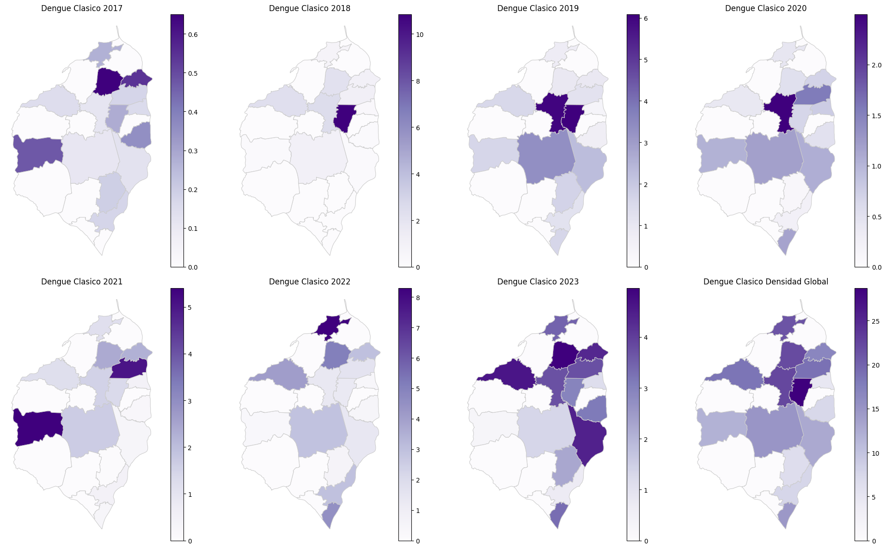
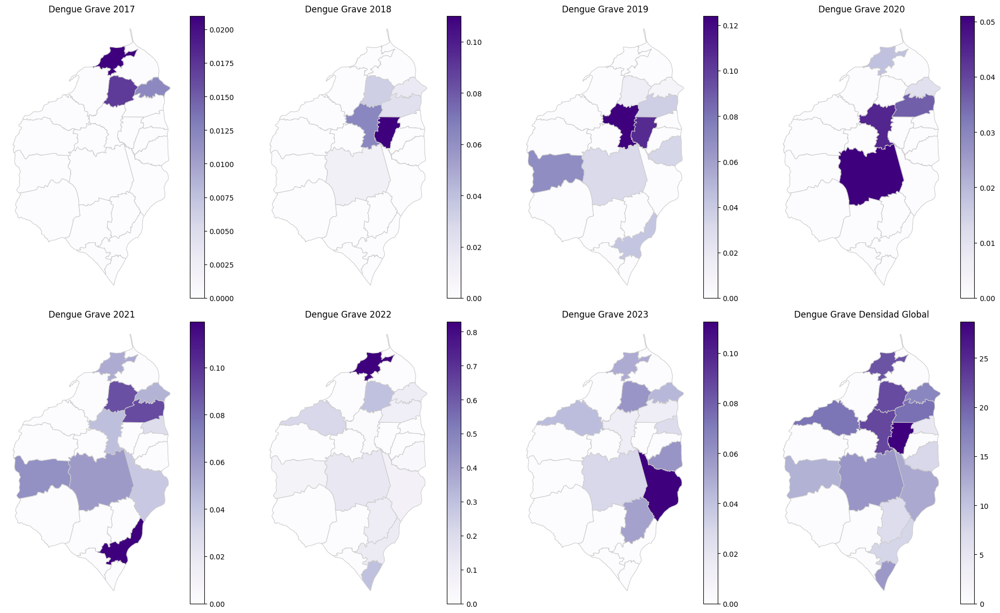
Variables temporales#
describir_categorica(df["año"])
📌 Variable: año
Conteo Proporción Clasico Grave Prop_Clasico Prop_Grave
año
2023 5665 0.3050 5609 56 0.9901 0.0099
2022 4257 0.2292 4054 203 0.9523 0.0477
2021 3171 0.1707 3099 72 0.9773 0.0227
2019 2063 0.1111 2031 32 0.9845 0.0155
2018 1613 0.0868 1591 22 0.9864 0.0136
2020 1295 0.0697 1273 22 0.9830 0.0170
2017 512 0.0276 501 11 0.9785 0.0215
-----------------------------------
# [Gráfico] Distribución por años
conteo_por_año = df['año'].value_counts(sort=False).sort_index()
# Crear gráfico
plt.figure(figsize=(10, 5))
sns.barplot(x=conteo_por_año.index.astype(str), y=conteo_por_año.values, color='#2E4265')
plt.title('Distribución de años', fontsize=14, fontweight='bold', pad=15)
plt.xlabel("Año")
plt.ylabel("Número de casos")
plt.xticks(rotation=0)
plt.ylim(0, max(conteo_por_año.values) * 1.1)
plt.tight_layout()
plt.show()
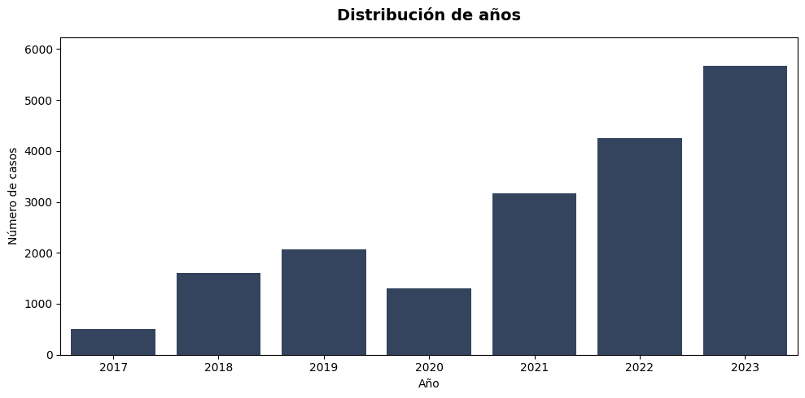
La variabilidad de los casos en el tiempo, muestra una notoria tendencia hacía la alza al pasar de los años, con variaciones importantes. Del 2017 al 2019, se obtienen la menor cantidad de registros, solo el 27% de los casos se dieron en este tiempo. En este periodo se evidencia un ciclo de crecimiento con caída hacia el 2020, para seguir la tendencia de crecimiento hacia el 2023. El año 2022, es el que mayor registro de casos de dengue grave presenta, unos 203 pacientes.
# [Gráfico] Casos por semana
casos_semana = df.groupby(["año", "semana"]).size().reset_index(name="casos")
casos_semana = casos_semana.sort_values(["año", "semana"]).reset_index(drop=True)
casos_semana["index"] = range(len(casos_semana))
# Graficar
plt.figure(figsize=(14, 6))
plt.plot(casos_semana["index"], casos_semana["casos"], linewidth=1)
años_unicos = casos_semana["año"].unique()
ticks = [casos_semana[casos_semana["año"] == año].index[0] for año in años_unicos]
plt.xticks(ticks, años_unicos, fontsize=10)
plt.title("Evolución de Casos por Semana (2017-2023)", fontsize=14)
plt.xlabel("Año")
plt.ylabel("Número de Casos")
plt.grid(True, linestyle="--", alpha=0.6)
plt.tight_layout()
plt.show()
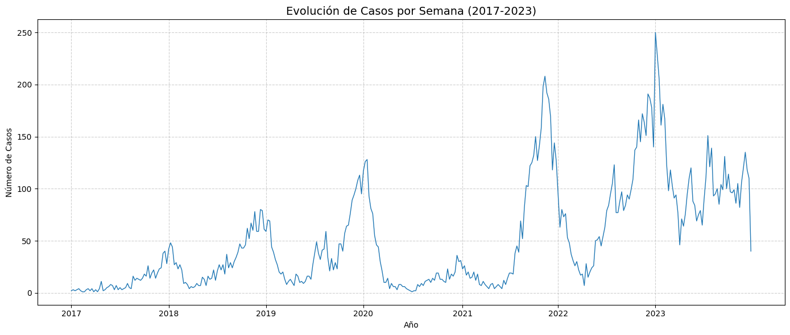
eventos = df["evento"].unique()
for ev in eventos:
# Filtrar por evento
df_evento = df[df["evento"] == ev]
# Agrupar por semana y año
casos_evento = df_evento.groupby(["año", "semana"]).size().reset_index(name="casos")
casos_evento = casos_evento.sort_values(["año", "semana"]).reset_index(drop=True)
casos_evento["index"] = range(len(casos_evento))
# Graficar
plt.figure(figsize=(14, 6))
plt.plot(casos_evento["index"], casos_evento["casos"], linewidth=1.5, label=f"Evento: {ev}")
años_unicos = casos_evento["año"].unique()
ticks = [casos_evento[casos_evento["año"] == año].index[0] for año in años_unicos]
plt.xticks(ticks, años_unicos, fontsize=10)
plt.title(f"Evolución de Casos por Semana ({ev})", fontsize=14)
plt.xlabel("Año")
plt.ylabel("Número de Casos")
plt.grid(True, linestyle="--", alpha=0.6)
plt.tight_layout()
plt.legend()
plt.show()
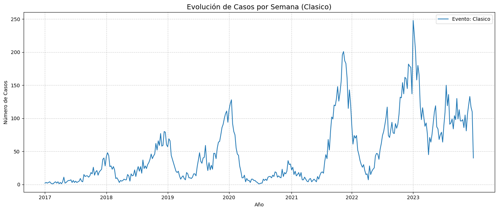
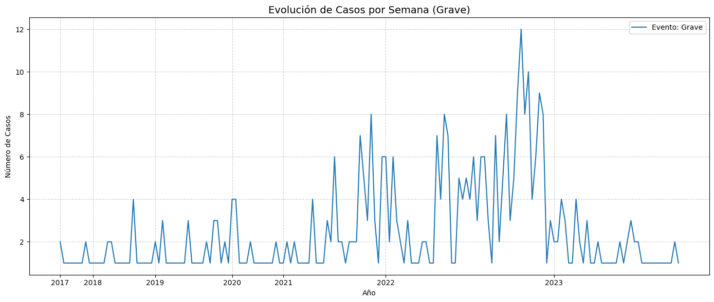
week = tabla_descriptiva(df_edad, variable="semana", grupo="año")
week
| año | n | media | mediana | sd | q25 | q75 | minimo | maximo | |
|---|---|---|---|---|---|---|---|---|---|
| 0 | 2017 | 505 | 38.36 | 42.0 | 12.61 | 33.0 | 49.0 | 1 | 52 |
| 1 | 2018 | 1604 | 33.51 | 39.0 | 16.24 | 24.0 | 47.0 | 1 | 52 |
| 2 | 2019 | 2050 | 32.72 | 38.0 | 16.97 | 21.0 | 47.0 | 1 | 52 |
| 3 | 2020 | 1287 | 17.04 | 7.0 | 18.23 | 3.0 | 35.0 | 1 | 53 |
| 4 | 2021 | 3157 | 39.97 | 43.0 | 11.15 | 37.0 | 47.0 | 1 | 52 |
| 5 | 2022 | 4245 | 33.81 | 38.0 | 15.08 | 26.0 | 46.0 | 1 | 52 |
| 6 | 2023 | 5615 | 24.39 | 25.0 | 16.10 | 8.0 | 38.0 | 1 | 52 |
# Contar casos por semana y año
conteo_semanal = df.groupby(['año', 'semana']).size().reset_index(name='casos')
def graficar_casos_semanales_por_año(df_conteo, nombre_grafico="Casos semanales por año"):
plt.figure(figsize=(12, 6))
sns.set_style("whitegrid")
años = sorted(df_conteo['año'].unique())
palette = ["#08306B", "#08519C", "#2171B5", "#4292C6", "#6BAED6", "#9ECAE1", "#C6DBEF"]
colores = palette[:len(años)] # selecciona N colores según la cantidad de años
for i, año in enumerate(años):
datos_año = df_conteo[df_conteo['año'] == año]
plt.plot(
datos_año['semana'],
datos_año['casos'],
label=str(año),
color=colores[i]
)
plt.title(nombre_grafico, fontsize=16, fontweight='bold')
plt.xlabel("Semana del año")
plt.ylabel("Número de casos")
plt.xticks(range(1, 54)) # Semanas ISO van de 1 a 53
plt.legend(title="Año")
plt.tight_layout()
plt.show()
graficar_casos_semanales_por_año(conteo_semanal)
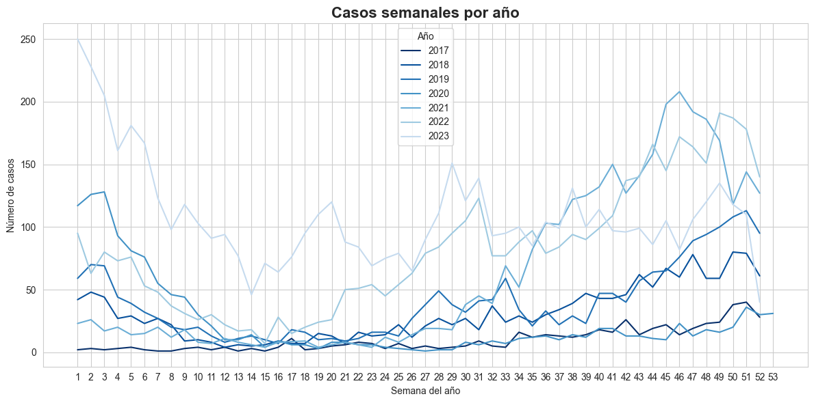
# Agrupar y pivotear
conteo_semanal_semanal = df.groupby(['año', 'semana']).size().reset_index(name='casos')
tabla_pivot = conteo_semanal.pivot(index='año', columns='semana', values='casos').fillna(0).astype(int)
# Crear lista para almacenar resultados
resumen_semanas = []
for año in tabla_pivot.index:
fila = tabla_pivot.loc[año]
semana_max = fila.idxmax()
casos_max = fila.max()
resumen_semanas.append({
"año": año,
"semana_más_casos": semana_max,
"casos_máximos": casos_max,
})
tabla_resumen = pd.DataFrame(resumen_semanas)
tabla_resumen
| año | semana_más_casos | casos_máximos | |
|---|---|---|---|
| 0 | 2017 | 51 | 40 |
| 1 | 2018 | 50 | 80 |
| 2 | 2019 | 51 | 113 |
| 3 | 2020 | 3 | 128 |
| 4 | 2021 | 46 | 208 |
| 5 | 2022 | 49 | 191 |
| 6 | 2023 | 1 | 250 |
Al detallar los registros por la semana epidemiológica, se evidencia que existe un aumento de casos hacia los últimos meses de cada año, con algunos picos hacia la mitad del año.
En promedio, los casos se dan en su mayoría entre la semana 28 y la semana 44, con una media de distribución hacia la semana 30. Se destaca que el record de casos fue de 250 en la primera semana del 2023.
Con respecto a cada año, la mayor variabilidad se evidencia en el 2023. Los años 2021 y 2022, presentan notados picos de alza hacia finales de cada año. El 2017 y el 2020, son los años de manor variabilidad.
2. Análisis estadístico#
demograficas = [
"sexo", # M/F
"edad_años", # Edad numérica
"ciclo_vital", # Etapa de vida
"grupo_etnico", # Grupo étnico declarado
"regimen_salud" # Régimen (contributivo, subsidiado, etc.)
]
# Variables del evento epidemiológico
evento = [
"evento", # Clásico, grave
"tipo_de_caso", # Confirmado, probable, descartado
"hospitalizacion", # Sí/No
"desenlace" # Recuperado, fallecido, etc.
]
# Variables de temporalidad
temporalidad = [
"año", # Año del evento
"semana", # Semana epidemiológica
"periodo", # Periodo (cada 4 semanas)
"fecha_inicio_sintomas", # Inicio de síntomas
"fecha_consulta", # Fecha de consulta
"fecha_hospitalizacion", # Fecha de hospitalización
"fecha_notificacion", # Fecha de notificación
"fecha_nacimiento" # Fecha de nacimiento
]
# Variables espaciales
espacial = [
"municipio", # Municipio de ocurrencia
"area", # Urbana o rural
]
Pruebas de independencia de variables categóricas#
# [Test] Prueba de Chi-Cuadrado
def matriz_pvalores(df, variables, alpha=0.05):
matriz = pd.DataFrame(index=variables, columns=variables)
for var1 in variables:
for var2 in variables:
if var1 == var2:
matriz.loc[var1, var2] = "-"
else:
tabla = pd.crosstab(df[var1], df[var2])
if tabla.shape[0] > 1 and tabla.shape[1] > 1:
chi2, p, dof, exp = chi2_contingency(tabla)
matriz.loc[var1, var2] = round(p, 4)
else:
matriz.loc[var1, var2] = None
return matriz
# [Test] Prueba de Chi-cuadrado por categoría
def chi_por_categoria(df, variable_referencia, variables_comparar, alpha=0.05):
categorias = df[variable_referencia].dropna().unique()
resultados = []
for categoria in categorias:
fila = {"Categoría": categoria}
for var in variables_comparar:
if var == variable_referencia:
fila[var] = "-"
continue
# Grupo A = categoría específica vs resto
df_temp = df.copy()
df_temp["grupo_vs_resto"] = df_temp[variable_referencia].apply(
lambda x: categoria if x == categoria else f"No {categoria}"
)
tabla = pd.crosstab(df_temp["grupo_vs_resto"], df_temp[var])
_, p, _, _ = chi2_contingency(tabla)
test = "Chi²"
simb = "★" if p <= alpha else ""
fila[var] = f"{round(p,4)} {simb}"
resultados.append(fila)
return pd.DataFrame(resultados)
Variables demográficas#
demograficas_c = ["sexo", "ciclo_vital","grupo_etnico","regimen_salud"]
matriz_demo = matriz_pvalores(df[demograficas_c], demograficas_c)
matriz_demo
| sexo | ciclo_vital | grupo_etnico | regimen_salud | |
|---|---|---|---|---|
| sexo | - | 0.0 | 0.2438 | 0.0 |
| ciclo_vital | 0.0 | - | 0.4876 | 0.0 |
| grupo_etnico | 0.2438 | 0.4876 | - | 0.0 |
| regimen_salud | 0.0 | 0.0 | 0.0 | - |
La independencia entre variables demográficas, indica que el ciclo_vital y el regimen de salud están significativamente asociados al sexo de los pacientes, es decir, que la distribución de la edad y la afiliación al sistema de salud varía según el sexo. El regimen de salud está fuertemente asociado con todas las demás variables, siendo esta la más dependiente. Estas asociaciones reflejan patrones de desigualdad o segmentación en la población según características demográficas.
tabla_sexo = chi_por_categoria(df, "sexo", demograficas_c)
tabla_sexo
| Categoría | sexo | ciclo_vital | grupo_etnico | regimen_salud | |
|---|---|---|---|---|---|
| 0 | Masculino | - | 0.0 ★ | 0.2438 | 0.0 ★ |
| 1 | Femenino | - | 0.0 ★ | 0.2438 | 0.0 ★ |
tabla_ciclo = chi_por_categoria(df, "ciclo_vital", demograficas_c)
tabla_ciclo
| Categoría | sexo | ciclo_vital | grupo_etnico | regimen_salud | |
|---|---|---|---|---|---|
| 0 | Adolescencia | 0.0 ★ | - | 0.7207 | 0.0 ★ |
| 1 | Infancia | 0.0 ★ | - | 0.088 | 0.0005 ★ |
| 2 | Adulto | 0.1157 | - | 0.5122 | 0.0 ★ |
| 3 | Adulto mayor | 0.6273 | - | 0.1002 | 0.0004 ★ |
| 4 | Primera infancia | 0.4713 | - | 0.5287 | 0.195 |
| 5 | Menor de 1 año | 0.5399 | - | 0.6423 | 0.0 ★ |
| 6 | Ancianidad | 0.1277 | - | 0.991 | 0.0227 ★ |
tabla_salud = chi_por_categoria(df, "regimen_salud", demograficas_c)
tabla_salud
| Categoría | sexo | ciclo_vital | grupo_etnico | regimen_salud | |
|---|---|---|---|---|---|
| 0 | Subsidiado | 0.0 ★ | 0.0 ★ | 0.0 ★ | - |
| 1 | Contributivo | 0.0052 ★ | 0.0 ★ | 0.0 ★ | - |
| 2 | Especial | 0.2593 | 0.089 | 0.981 | - |
| 3 | Excepción | 0.0 ★ | 0.1484 | 0.0542 | - |
| 4 | No asegurado | 0.789 | 0.0017 ★ | 0.0002 ★ | - |
| 5 | Indeterminado | 1.0 | 0.0251 ★ | 0.9738 | - |
Para cada categoría dentro de las variables se destaca las etapas de vida no se distribuyen igual entre femeninas y masculinos, y el tipo de afiliación al sistema de salud varía entre sexos.
En casi todas las etapas de vida, el régimen de salud varía notablemente. En la adolescencia y la infancia, la proporción de hombres y mujeres varía.
El régimen de salud esta fuertemente asociado a las demás variables demográficas, con diferencias marcadas para la población subsidiada y contributiva.
categoricas = ["sexo", "ciclo_vital","grupo_etnico","regimen_salud",
"tipo_de_caso", "hospitalizacion","desenlace"]
tabla_evento = chi_por_categoria(df, "evento", demograficas_c)
tabla_evento
| Categoría | sexo | ciclo_vital | grupo_etnico | regimen_salud | |
|---|---|---|---|---|---|
| 0 | Clasico | 1.0 | 0.0003 ★ | 0.402 | 0.0 ★ |
| 1 | Grave | 1.0 | 0.0003 ★ | 0.402 | 0.0 ★ |
La prueba de Chi-Cuadrado de independencia entre el evento de dengue y las variables demográficas muestra que ambos casos de evento están significativamente relacionados a la edad y al régimen de salud.
matriz_eve= matriz_pvalores(df[evento], evento)
matriz_eve
| evento | tipo_de_caso | hospitalizacion | desenlace | |
|---|---|---|---|---|
| evento | - | 0.393 | 0.0 | 0.0 |
| tipo_de_caso | 0.393 | - | 0.0 | 0.756 |
| hospitalizacion | 0.0 | 0.0 | - | 0.756 |
| desenlace | 0.0 | 0.756 | 0.756 | - |
Con respecto a las variables relacionadas con el evento epidemiológico, se observa que la hospitalización y desenlace están significativamente asociados con el evento. Además, la hospitalización y el tipo de caso tienen una asociación significativa, lo que sugiere que los casos confirmados o probables tienen diferente propensión a ser hospitalizados.
Análisis bivariado: Variables de evento según demografía#
Hospitalización de pacientes#
plt.figure(figsize=(10,5))
sns.countplot(data=df, y="ciclo_vital", hue="hospitalizacion", palette=[ 'blue','dodgerblue'] )
plt.title("Hospitalización según grupo de edad")
plt.ylabel("Grupo de edad")
plt.xlabel("Número de casos")
plt.legend(title="Hospitalizado")
plt.show()
plt.figure(figsize=(10,5))
sns.countplot(data=df, x="sexo", hue="hospitalizacion", palette=[ 'blue','dodgerblue'] )
plt.title("Hospitalización según sexo")
plt.xlabel("Sexo")
plt.ylabel("Número de casos")
plt.legend(title="Hospitalizado")
plt.show()
plt.figure(figsize=(10,5))
sns.countplot(data=df, y="regimen_salud", hue="hospitalizacion", palette=[ 'blue','dodgerblue'] )
plt.title("Hospitalización según regimen de salud")
plt.ylabel("Regimen de salud")
plt.xlabel("Número de casos")
plt.legend(title="Hospitalizado")
plt.show()
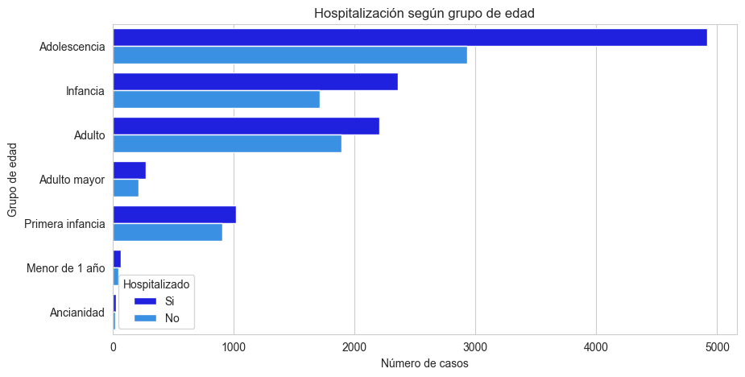
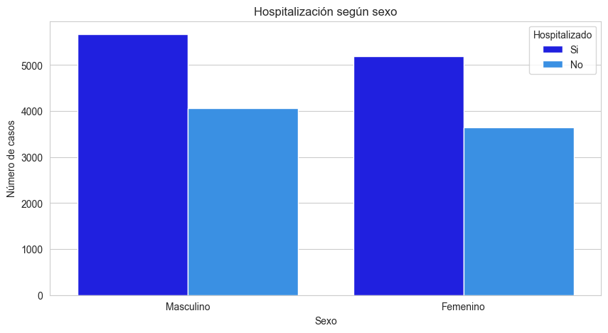
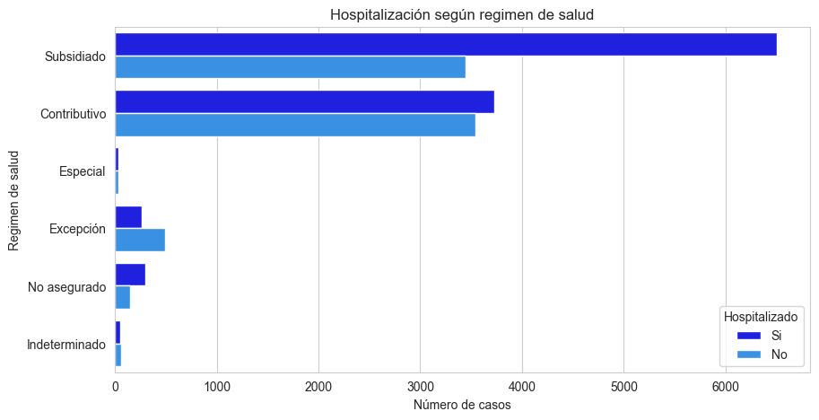
Tipo de caso#
plt.figure(figsize=(10,5))
sns.countplot(data=df, y="ciclo_vital", hue="tipo_de_caso", palette=[ 'blue','dodgerblue','skyblue'] )
plt.title("Tipo de caso según grupo de edad")
plt.ylabel("Grupo de edad")
plt.xlabel("Número de casos")
plt.legend(title="Tipo de caso")
plt.show()
plt.figure(figsize=(10,5))
sns.countplot(data=df, x="sexo", hue="tipo_de_caso", palette=[ 'blue','dodgerblue','skyblue'] )
plt.title("Tipo de caso según sexo")
plt.xlabel("Sexo")
plt.ylabel("Número de casos")
plt.legend(title="Tipo de caso")
plt.show()
plt.figure(figsize=(10,5))
sns.countplot(data=df, y="regimen_salud", hue="tipo_de_caso", palette=[ 'blue','dodgerblue','skyblue'] )
plt.title("Tipo de caso según regimen de salud")
plt.ylabel("Regimen de salud")
plt.xlabel("Número de casos")
plt.legend(title="Tipo de caso")
plt.show()
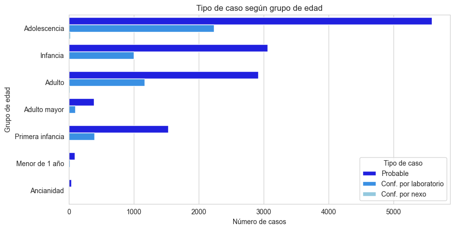
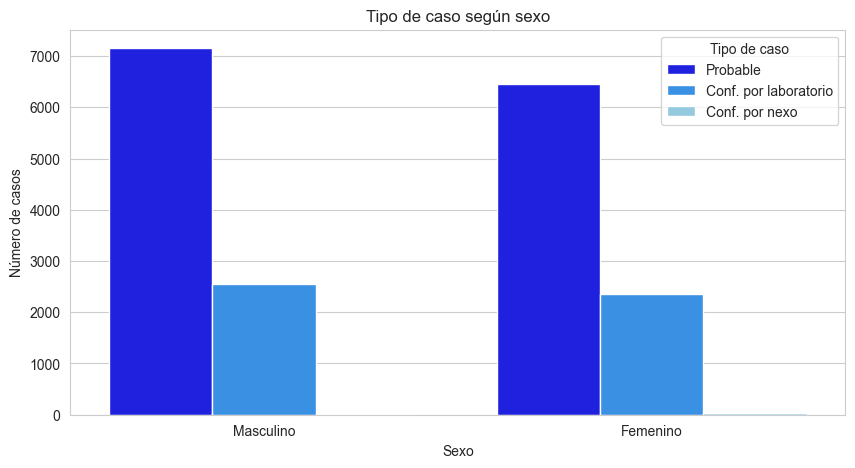
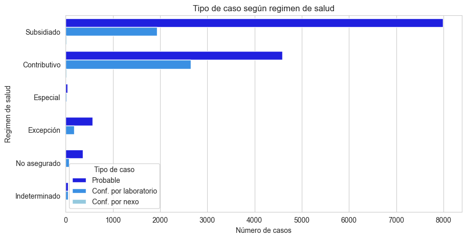
Desenlace#
df_fallecidos = df[df["desenlace"] == "Fallecido"]
plt.figure(figsize=(10,5))
sns.countplot(data=df_fallecidos, y="ciclo_vital", color='dodgerblue')
plt.title("Fallecidos según grupo de edad")
plt.ylabel("Grupo de edad")
plt.xlabel("Número de casos")
plt.show()
plt.figure(figsize=(10,5))
sns.countplot(data=df_fallecidos, x="sexo", color='dodgerblue')
plt.title("Fallecidos según sexo")
plt.xlabel("Sexo")
plt.ylabel("Número de casos")
plt.show()
plt.figure(figsize=(10,5))
sns.countplot(data=df_fallecidos, y="regimen_salud", color='dodgerblue')
plt.title("Fallecidos según regimen de salud")
plt.ylabel("Regimen de salud")
plt.xlabel("Número de casos")
plt.show()
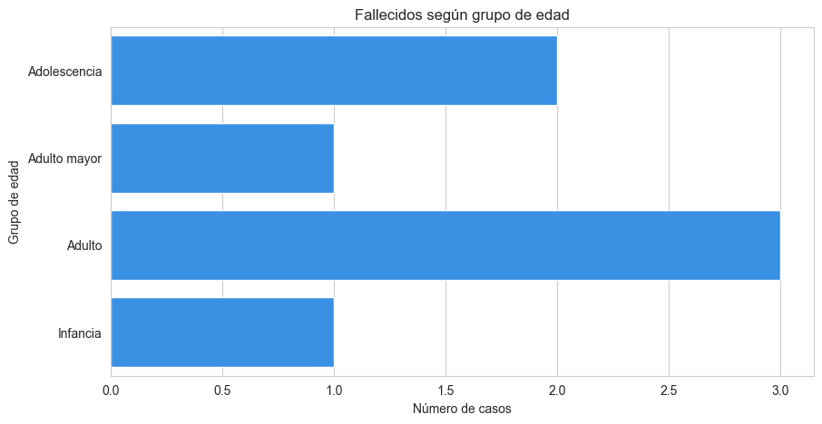
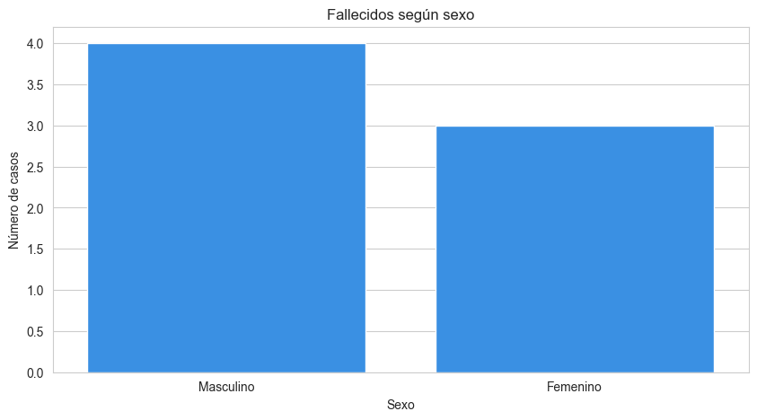
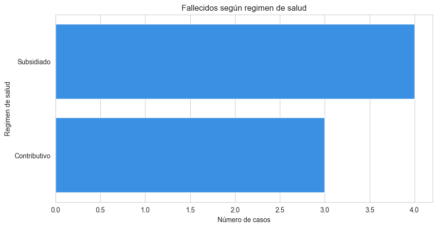
Temporalidad de casos#
# [Test] Shapiro para normalidad
stat, p = shapiro(semanas['total_casos'])
print(f"Estadístico={stat:.3f}, p-valor={p:.4f}")
Estadístico=0.849, p-valor=0.0000
Los casos de dengue por semana, de acuerdo a la prueba shapiro, no siguen una distribución normal.
# [Test] Kruskall Wallys para correspondencia
def comparar_casos_por_año(df, num_var='casos', cat_var='año', alpha=0.05):
grupos = [df[df[cat_var]==g][num_var] for g in df[cat_var].unique()]
# Kruskal-Wallis
stat, p = kruskal(*grupos)
kruskal_res = pd.DataFrame({
'Estadístico': [stat],
'p-valor': [p],
'Significativo': ["★" if p <= alpha else ""]
})
# Post-hoc Dunn (solo si hay más de 2 grupos)
if len(df[cat_var].unique()) > 2:
posthoc = sp.posthoc_dunn(df, val_col=num_var, group_col=cat_var, p_adjust='bonferroni')
else:
posthoc = None
return {'kruskal': kruskal_res, 'posthoc': posthoc}
resultados = comparar_casos_por_año(semanas, num_var='total_casos', cat_var='año')
print("Kruskal-Wallis:")
resultados['kruskal']
Kruskal-Wallis:
| Estadístico | p-valor | Significativo | |
|---|---|---|---|
| 0 | 171.980016 | 1.709937e-34 | ★ |
print("\nDunn post-hoc (p-valores corregidos Bonferroni):")
resultados['posthoc']
Dunn post-hoc (p-valores corregidos Bonferroni):
| 2017 | 2018 | 2019 | 2020 | 2021 | 2022 | 2023 | |
|---|---|---|---|---|---|---|---|
| 2017 | 1.000000e+00 | 1.696668e-04 | 6.715088e-07 | 2.942825e-01 | 8.032218e-08 | 3.512154e-18 | 8.487212e-28 |
| 2018 | 1.696668e-04 | 1.000000e+00 | 1.000000e+00 | 8.951510e-01 | 1.000000e+00 | 1.025256e-04 | 3.378912e-10 |
| 2019 | 6.715088e-07 | 1.000000e+00 | 1.000000e+00 | 4.069308e-02 | 1.000000e+00 | 9.675433e-03 | 2.989544e-07 |
| 2020 | 2.942825e-01 | 8.951510e-01 | 4.069308e-02 | 1.000000e+00 | 1.074953e-02 | 7.602006e-10 | 2.949031e-17 |
| 2021 | 8.032218e-08 | 1.000000e+00 | 1.000000e+00 | 1.074953e-02 | 1.000000e+00 | 4.101027e-02 | 3.113899e-06 |
| 2022 | 3.512154e-18 | 1.025256e-04 | 9.675433e-03 | 7.602006e-10 | 4.101027e-02 | 1.000000e+00 | 6.334551e-01 |
| 2023 | 8.487212e-28 | 3.378912e-10 | 2.989544e-07 | 2.949031e-17 | 3.113899e-06 | 6.334551e-01 | 1.000000e+00 |
La comparación del número de casos por semana entre los años 2017 y 2023 usando Kruskal-Wallis mostró una diferencia estadísticamente significativa (H = 171.98, p ≪ 0.001), indicando que la distribución de casos varió a lo largo del tiempo. El análisis post-hoc Dunn con corrección Bonferroni reveló que muchos años difieren significativamente entre sí; por ejemplo, 2017 presenta diferencias con 2018, 2019, 2022 y 2023, mientras que no difiere significativamente de 2020. En general, los años más recientes (2022 y 2023) muestran cambios marcados respecto a años anteriores, reflejando que la dinámica de los casos no fue constante y que ciertos periodos experimentaron aumentos o disminuciones significativas en la incidencia semanal. Esto evidencia una variación temporal clara en la distribución de casos a lo largo de los años.
# [Test] Mann-Kendall para los la tendencia
mann_kendall = original_test(semanas['total_casos'])
signal = semanas['total_casos'].values
algo = rpt.Pelt(model="rbf").fit(signal)
breaks = algo.predict(pen=10)
print(mann_kendall)
print(breaks)
Mann_Kendall_Test(trend='increasing', h=np.True_, p=np.float64(0.0), z=np.float64(13.044571276042761), Tau=np.float64(0.4579511397693216), s=np.float64(30255.0), var_s=np.float64(5379055.0), slope=np.float64(0.26143790849673204), intercept=np.float64(-18.450980392156865))
[85, 165, 240, 364]
# [Gráfico] ACF de serie temporal
plot_acf(semanas['total_casos'])
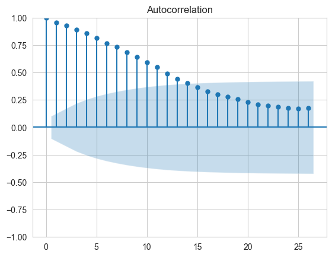
De acuerdo con la prueba Mann-Kendall para evaluar la tendencia monotónica en el total de casos por semana epidemiológica, la serie muestra una tendencia creciente a lo largo del tiempo, rechazando la hipótesis nula de que no sigue una tendencia. El valor de correlación de Kendall indica una moderada-fuerte relación monotónica positiva (constante creciente). La mediana del cambio por semana es aproximadamente 0.26 casos adicionales por semana. De esta manera, la prueba indica que el número de casos semanales ha aumentado significativamente de manera consistente a lo largo de los años.
El análisis de cambio estructural (breakpoint) indica que al rededor de la semana 85 (en este caso finales del 2018) hay un cambio abrupto en la media varianza de casos. Lo mismo en la semana 165, que corresponde a una de las primeras semanas del 2020. Luego en la semana 240 (finales del 2021) se tiene otro de los cambios abruptos. El último cambio estructural es la semana 364, es decir, la primera semana del año 2023. Esta variación indica que la serie no solo tiene una tendencia creciente, sino que también existen periodos donde la dinámica cambia abruptamente, lo que indica periodos de mayor brotes o años con mayor incidencia.
De acuerdo a la función de autocorrelación ACF, la serie tiene una Autocorrelación positiva decreciente, es decir, que los valores de semanas cercanas están correlacionados, y la correlación disminuye gradualmente a medida que aumenta el lag, esto indica que los casos dependen de semanas anteriores. La autocorrelación es significativa hasta ~15 semanas. El decaimiento gradual sugiere un una tendencia. Esto indica que para las semanas cercanas, el número de casos es cercano, reflejando la forma en que la enfermedad se propaga en el tiempo.
Distribución de espacial de casos#
# [Test] Índice de Moran
#Unir con la geometría
muni = gdf.merge(casos, on="municipio")
# Crear matriz de pesos contiguos
w = Queen.from_dataframe(muni, use_index=False)
w.transform = "r" #
y = muni['total_casos'].values
moran = Moran(y, w)
print("Índice de Moran:", moran.I)
print("Valor-p:", moran.p_sim)
Índice de Moran: 0.1705486844015851
Valor-p: 0.004
# Contiguos
# Crear matriz de pesos (Queen contiguidad)
w = libpysal.weights.Queen.from_dataframe(muni, use_index=False)
w.transform = "r"
moran_loc = Moran_Local(y, w)
# Signo de Moran local: High-High, Low-Low, Low-High, High-Low
muni['HH'] = (moran_loc.q==1) & (moran_loc.p_sim < 0.05) # High-High
muni['LL'] = (moran_loc.q==3) & (moran_loc.p_sim < 0.05) # Low-Low
muni['HL'] = (moran_loc.q==2) & (moran_loc.p_sim < 0.05) # High-Low
muni['LH'] = (moran_loc.q==4) & (moran_loc.p_sim < 0.05) # Low-High
# Crear una columna con el tipo de cluster
def cluster_label(row):
if row['HH']: return 'High-High'
elif row['LL']: return 'Low-Low'
elif row['HL']: return 'High-Low'
elif row['LH']: return 'Low-High'
else: return 'No Signif'
muni['cluster'] = muni.apply(cluster_label, axis=1)
# Definir colores
colors = {
'High-High':'red',
'Low-Low':'blue',
'High-Low':'orange',
'Low-High':'lightgreen',
'No Signif':'lightgrey'
}
# Graficar mapa
fig, ax = plt.subplots(1, 1, figsize=(10,10))
muni.plot(color=muni['cluster'].map(colors), edgecolor='black', ax=ax)
plt.title("Clusters de Moran Local")
plt.axis('off')
plt.show()
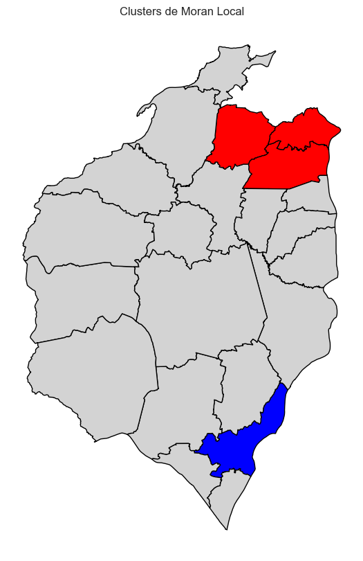
El índice de moran indica autocorrelación positiva moderada, es decir, que en los municipios con muchos casos tienden a estar cercanos entre sí, pero no es fuerte. Con el valor-p (0.009) se puede afirmar de que los casos se agregan especialmente en algunos municipios; es decir, los municipios con más casos tienden a estar cerca unos de otros. En el mapa se identifica el cluster de mayor foco de casos en los municipios de Soledad, Malambo y Galapa. El coldspots se identifica en el municipio de Santa Lucía.